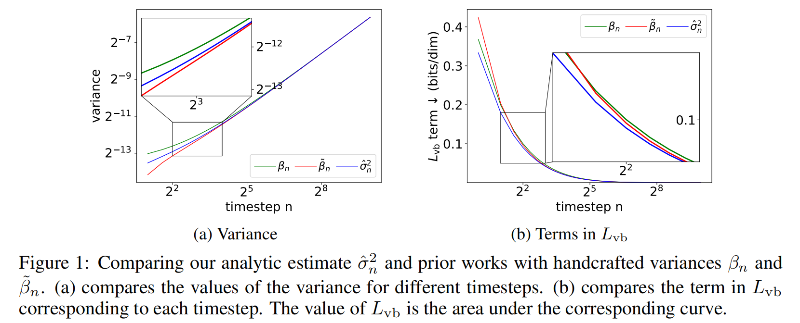
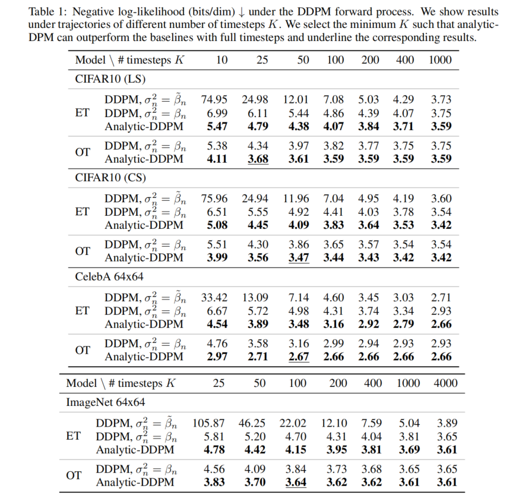
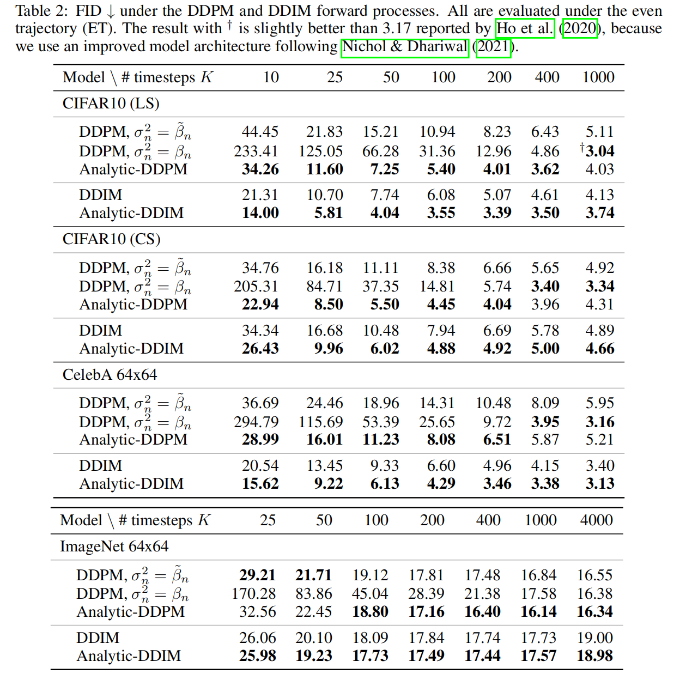
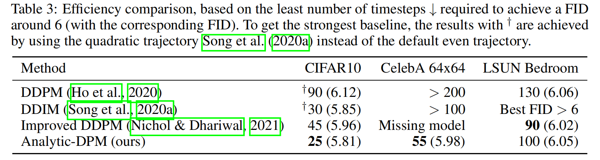
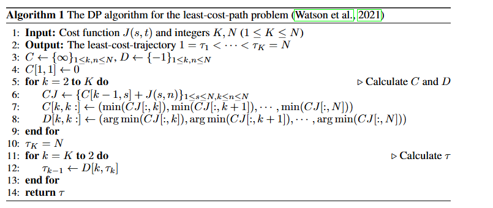

全文翻译
摘要
扩散概率模型（Diffusion Probabilistic Models, DPMs）是一类强大的生成模型。尽管它们取得了成功，但DPMs的推理成本很高，因为通常需要迭代数千个时间步。推理中的一个关键问题是估计反向过程中每个时间步的方差。在这项工作中，我们给出了一个令人惊讶的结果：DPM的最优反向方差和相应的最优KL散度都可以用其得分函数的解析形式表示。在此基础上，我们提出了Analytic-DPM，这是一个无需训练的推理框架，它使用蒙特卡罗方法和预训练的基于得分的模型来估计方差和KL散度的解析形式。此外，为了纠正基于得分的模型可能带来的偏差，我们推导了最优方差的上下界，并对估计值进行裁剪以获得更好的结果。在实验中，我们的Analytic-DPM提高了各种DPM的对数似然性，生成了高质量的样本，同时实现了20到80倍的加速。
1. 引言
扩散过程会在一系列时间步中逐渐向数据分布添加噪声。通过学习逆向操作，扩散概率模型（DPMs）（Sohl-Dickstein等人，2015；Ho等人，2020；Song等人，2020b）定义了一种数据生成过程。最近研究表明，DPMs能够生成高质量样本（Ho等人，2020；Nichol和Dhariwal，2021；Song等人，2020b；Dhariwal和Nichol，2021），这些样本与当前最先进的生成对抗网络（GAN）模型（Goodfellow等人，2014；Brock等人，2018；Wu等人，2019；Karras等人，2020b）相当，甚至更优。
尽管取得了成功，但DPMs的推理（如采样和密度评估）通常需要迭代数千个时间步，这比其他生成模型（如GANs）慢两到三个数量级（Song等人，2020a）。推理中的一个关键问题是估计反向过程中每个时间步的方差。大多数先前的工作在所有时间步都使用手工设定的值，这通常需要运行很长的链才能获得合理的样本和密度值（Nichol和Dhariwal，2021）。Nichol和Dhariwal（2021）试图通过在反向过程中学习方差网络来提高采样效率。然而，它仍然需要相对较长的轨迹才能获得合理的对数似然（见Nichol和Dhariwal（2021）的附录E）。
在这项工作中，我们给出了一个令人惊讶的结果：DPM的最优反向方差和相应的最优KL散度都可以用其得分函数（即对数密度的梯度）的解析形式表示。在此基础上，我们提出了Analytic-DPM，这是一个无需训练的推理框架，用于在实现可比甚至更优性能的同时提高预训练DPM的效率。Analytic-DPM使用蒙特卡罗方法和预训练DPM中的基于得分的模型来估计方差和KL散度的解析形式。相应的轨迹通过动态规划算法（Watson等人，2021）计算。此外，为了纠正基于得分的模型可能导致的潜在偏差，我们推导出最优方差的上下界，并对估计值进行裁剪以获得更好的结果。最后，我们揭示了得分函数与数据协方差矩阵之间的有趣关系。
Analytic-DPM以即插即用的方式适用于多种DPM（Ho等人，2020；Song等人，2020a；Nichol和Dhariwal，2021）。在实验中，Analytic-DPM持续提高这些DPM的对数似然，同时实现20到40倍的加速。此外，Analytic-DPM还持续提高去噪扩散隐式模型（DDIMs）（Song等人，2020a）的样本质量，并且最多需要50个时间步（与完整时间步相比，加速20到80倍）就能达到与相应基线相当的弗雷歇 inception距离（FID） 。
2. 背景
扩散概率模型（DPMs）首先构建一个正向过程$q(x_{1:N}|x_{0})$，向数据分布$q(x_{0})$中注入噪声，然后逆向这个正向过程来恢复数据。给定正向噪声调度$\beta_{n} \in (0,1)$（$n = 1,\cdots,N$），去噪扩散概率模型（DDPMs）（Ho等人，2020）考虑一个马尔可夫正向过程：
其中$I$是单位矩阵，$\alpha_{n}$和$\beta_{n}$是标量，且$\alpha_{n}:=1 - \beta_{n}$。Song等人（2020a）引入了一种更一般的非马尔可夫过程，由非负向量$\lambda = (\lambda_{1},\cdots,\lambda_{N}) \in \mathbb{R}_{\geq0}^{N}$索引：
这里$\overline{\alpha}_{n}:=\prod_{i = 1}^{n}\alpha_{i}$，$\overline{\beta}_{n}:=1-\overline{\alpha}_{n}$。实际上，当$\lambda_{n}^{2}=\tilde{\beta}_{n}$时，公式（2）包含了DDPM的正向过程作为一个特殊情况，其中$\tilde{\beta}_{n}:=\frac{\overline{\beta}_{n - 1}}{\overline{\beta}_{n}}\beta_{n}$。公式（2）的另一个特殊情况是去噪扩散隐式模型（DDIM）的正向过程，其中$\lambda_{n}^{2}=0$。此外，我们还可以进一步推导出$q_{\lambda}(x_{n}|x_{0})=\mathcal{N}(x_{n}|\sqrt{\overline{\alpha}_{n}}x_{0},\overline{\beta}_{n}I)$，它与$\lambda$无关。在本文的其余部分，我们将重点关注公式（2）中的正向过程，因为它更具一般性，为了简单起见，我们将省略索引$\lambda$，并将其表示为$q(x_{1:N}|x_{0})$。
公式（2）的反向过程被定义为一个马尔可夫过程，旨在通过从标准高斯分布$p(x_{N})=\mathcal{N}(x_{N}|\overline{0},I)$逐渐去噪来逼近$q(x_{0})$：
其中$\mu_{n}(x_{n})$通常由一个与时间相关的基于得分的模型$s_{n}(x_{n})$（Song和Ermon，2019；Song等人，2020b）参数化：
反向过程可以通过优化负对数似然的变分下界$L_{vb}$来学习：
1 Ho等人（2020）；Song等人（2020a）用$\tilde{\mu}_{n}(x_{n},\frac{1}{\sqrt{\alpha_{n}}}(x_{n}-\sqrt{\overline{\beta}_{n}}\epsilon_{n}(x_{n})))$对$\mu_{n}(x_{n})$进行参数化，通过令$s_{n}(x_{n})=-\frac{1}{\sqrt{\overline{\beta}_{n}}}\epsilon_{n}(x_{n})$，这与公式（3）等价。
这等价于优化正向过程和反向过程之间的KL散度：
在实际应用中，为了提高样本质量，Ho等人（2020）没有直接优化$L_{vb}$，而是考虑了$L_{vb}$的一个重新加权变体来学习$s_{n}(x_{n})$：
其中$n$在$1$到$N$之间均匀分布，$q_{n}(x_{n})$是正向过程在时间步$n$的边际分布，$\epsilon$是标准高斯噪声，等式右边的$x_{n}$通过$x_{n}=\sqrt{\overline{\alpha}_{n}}x_{0}+\sqrt{\overline{\beta}_{n}}\epsilon$进行重参数化，$c$是一个仅与$q$相关的常数。实际上，公式（5）正是得分匹配目标（Song和Ermon，2019）的加权和，它对于所有$n \in \{1,2,\cdots,N\}$都有一个最优解$s_{n}^{*}(x_{n})=\nabla_{x_{n}}\log q_{n}(x_{n})$。
注意，公式（5）没有为方差$\sigma_{n}^{2}$提供学习信号。实际上，在大多数先前的工作中，$\sigma_{n}^{2}$通常是手工设定的。在DDPMs（Ho等人，2020）中，两种常用的设置是$\sigma_{n}^{2}=\beta_{n}$和$\sigma_{n}^{2}=\tilde{\beta}_{n}$。在DDIMs中，Song等人（2020a）始终使用$\sigma_{n}^{2}=\lambda_{n}^{2}$。我们认为，这些手工设定的值通常不是公式（4）的真正最优解，会导致次优的性能。
3. 最优反向方差的解析估计
对于一个DPM，我们首先证明，式（4）的最优均值和最优方差都可以用得分函数的解析形式表示，这在定理1中进行了总结。
定理1（式（4）最优解的得分表示，证明见附录A.2）。式（4）的最优解和为：
其中$q_{n}(x_{n})$是正向过程在时间步$n$的边际分布，$d$是数据的维度。
定理1的证明包含三个关键步骤：
- 第一步（见引理9）称为矩匹配（Minka，2013），它表明在KL散度下用高斯密度逼近任意密度，等同于将两个密度的前两阶矩设置为相同。据我们所知，矩匹配与DPM之间的联系此前尚未被揭示。
- 第二步（见引理13），我们仔细利用以$x_{0}$为条件的总方差定律，将$q(x_{n - 1}|x_{n})$的二阶矩转换为$q(x_{0}|x_{n})$的二阶矩。
- 第三步（见引理11），我们意外地发现$q(x_{0}|x_{n})$的二阶矩可以用得分函数表示，然后将得分表示代入$q(x_{n - 1}|x_{n})$的二阶矩中，从而得到定理1中的最终结果。
定理1中的结果（以及后面出现的其他结果）对于DDPM正向过程（即$\lambda_{n}^{2}=\tilde{\beta}_{n}$）可以进一步简化，详细内容见附录D。此外，我们还可以将定理1扩展到具有连续时间步的DPM（Song等人，2020b；Kingma等人，2021），在这种情况下，它们相应的最优均值和方差也可以由得分函数以解析形式确定（扩展内容见附录E.1）。
注意，我们在式（6）中最优均值$\mu_{n}^{*}(x_{n})$的解析形式，与之前（Ho等人，2020）在式（3）中对$\mu_{n}(x_{n})$的参数化形式是一致的。唯一的区别在于，式（3）用基于得分的模型$s_{n}(x_{n})$，替代了式（6）中的得分函数$\nabla_{x_{n}} log q_{n}(x_{n})$ 。这一结果明确表明，式（5）在本质上与$L_{vb}$目标具有相同的最优均值解，为先前的研究提供了一种简单且不同的视角。
与（Ho等人，2020；Song等人，2020a）中使用的手工设定策略不同，定理1表明，在给定预训练的基于得分的模型$s_{n}(x_{n})$的情况下，最优反向方差$\sigma_{n}^{*2}$也可以在无需任何额外训练的情况下进行估计。实际上，我们首先通过$\Gamma = (\Gamma_{1}, \cdots, \Gamma_{N})$来估计$\nabla_{x_{n}} log q_{n}(x_{n})$的期望均方范数，其中：
$M$是蒙特卡罗样本的数量。对于一个预训练模型，我们只需要计算一次$\Gamma$，并在下游计算中重复使用它（关于$\Gamma$计算成本的详细讨论见附录H.1）。然后，根据式（7），我们按如下方式估计$\sigma_{n}^{*2}$：
我们通过实验验证了定理1。在图1（a）中，我们绘制了在CIFAR10上训练的DDPM的解析估计值$\hat{\sigma}_{n}^{2}$，以及Ho等人（2020）使用的基线$\beta_{n}$和$\tilde{\beta}_{n}$。在较小的时间步长下，这些策略的表现有所不同。图1（b）表明，对于$L_{vb}$的每一项，我们的$\hat{\sigma}_{n}^{2}$都优于基线，尤其是在较小的时间步长下。我们在其他数据集上也得到了类似的结果（见附录G.1）。此外，我们发现，只需少量的蒙特卡罗（MC）样本（例如，$M = 10, 100$），就足以使蒙特卡罗方法带来的方差足够小，并且能够获得与大量样本（大$M$）相似的性能（见附录G.2）。我们还在附录H.2中讨论了插入$\hat{\sigma}_{n}^{2}$后$L_{vb}$的随机性。
|  |
|---|
| 图1：比较我们的解析估计值$\hat{\sigma}_{n}^{2}$与先前工作中手工设定的方差$\beta_{n}$和$\tilde{\beta}_{n}$ 。(a)比较了不同时间步长下的方差值。(b)比较了$L_{vb}$中每个时间步长对应的项。$L_{vb}$的值是相应曲线下的面积。 |
3.1 界定最优反向方差以减少偏差
根据式（7）和式（9），解析估计值$\hat{\sigma}_{n}^{2}$的偏差为：
我们对方差的估计使用了基于得分的模型$s_{n}(x_{n})$来近似真实的得分函数$\nabla_{x_{n}} log q_{n}(x_{n})$。因此，对于一个预训练模型，式（10）中的近似误差是不可避免的。同时，如果我们使用更短的轨迹进行采样（详见第4节），式（10）中的系数可能会很大，这可能会导致较大的偏差。
为了减少偏差，我们推导了最优反向方差的上下界，并根据这些界限对估计值进行裁剪。重要的是，这些界限与数据分布$q(x_{0})$无关，因此可以高效地计算。我们首先在不做任何数据假设的情况下，推导出的上下界。然后，如果数据分布有界，我们展示了的另一个上界。我们在定理2中正式给出这些界限。
定理2（最优反向方差的界限，证明见附录A.3）。$\sigma_{n}^{*2}$具有以下上下界：
如果我们进一步假设$q(x_{0})$是在$[a, b]^{d}$上的有界分布，其中$d$是数据的维度，那么$\sigma_{n}^{_2}$可以进一步被上界约束为：
定理2表明，先前工作（Ho等人，2020；Song等人，2020a）中手工设定的反向方差$\lambda_{n}^{2}$低估了$\sigma_{n}^{*2}$。例如，在DDPM中$\lambda_{n}^{2}=\tilde{\beta}_{n}$。我们在图1（a）中将其与我们的估计值进行比较，结果与定理2一致。此外，$q(x_{0})$的有界性假设在包括图像生成建模在内的许多场景中都成立，式（11）和式（12）中的哪个上界更紧取决于$n$。因此，我们根据最小的上界对估计值进行裁剪。此外，我们在附录G.3中通过数值方法展示了这些界限是紧密的。
4. 最优轨迹的解析估计
完整时间步长$N$的数量可能很大，这使得实际推理过程较为缓慢。因此，我们可以构建一个更短的正向过程$q(x_{\tau_{1}},\cdots,x_{\tau_{K}}|x_{0})$，该过程受限于由$K$个时间步组成的轨迹$1 = \tau_{1}<\cdots<\tau_{K}=N$（Song等人，2020a；Nichol和Dhariwal，2021；Watson等人，2021），$K$可以远小于$N$，从而加快推理速度。正式地，较短的过程定义为$q(x_{\tau_{1}},\cdots,x_{\tau_{K}}|x_{0}) = q(x_{\tau_{K}}|x_{0})\prod_{k = 2}^{K}q(x_{\tau_{k - 1}}|x_{\tau_{k}},x_{0})$，其中：
相应的反向过程为$p(x_{0},x_{\tau_{1}},\cdots,x_{\tau_{K}})=p(x_{\tau_{K}})\prod_{k = 1}^{K}p(x_{\tau_{k - 1}}|x_{\tau_{k}})$，其中：
根据定理1，在KL散度最小化的意义下，最优的均值和方差为：
其中$\alpha_{\tau_{k}|\tau_{k - 1}}:=\overline{\alpha}_{\tau_{k}}/\overline{\alpha}_{\tau_{k - 1}}$。根据定理2，我们可以推导出的类似界限（详见附录C）。与式（9）类似，的估计值为：
其中$\Gamma$在式（8）中定义，并且可以在不同的轨迹选择中共享。基于上述最优反向过程$p^{*}$，我们进一步优化轨迹：
其中$J(\tau_{k - 1},\tau_{k})=\log(\sigma_{\tau_{k - 1}|\tau_{k}}^{*2}/\lambda_{\tau_{k - 1}|\tau_{k}}^{2})$，$c$是与轨迹$\tau$无关的常数（证明见附录A.4）。式（14）中的KL散度可以分解为$K - 1$项，并且每一项都可以用得分函数的解析形式表示。我们将每一项视为在$(\tau_{k - 1},\tau_{k})$处评估的成本函数$J$，并且在给定$\Gamma$的情况下，它可以通过$J(\tau_{k - 1},\tau_{k})\approx\log(\hat{\sigma}_{\tau_{k - 1}|\tau_{k}}^{2}/\lambda_{\tau_{k - 1}|\tau_{k}}^{2})$有效地估计，这不需要任何神经网络计算。虽然对数函数即使在已知正确得分函数的情况下也会引入偏差，但可以通过增加$M$来减小偏差。
结果，式（14）简化为一个有向图上的经典最小成本路径问题（Watson等人，2021），其中节点为$\{1,2,\cdots,N\}$，从$s$到$t$的边的成本为$J(s,t)$。我们想要找到一条从1开始并终止于$N$的$K$个节点的最小成本路径。这个问题可以通过Watson等人（2021）引入的动态规划（DP）算法来解决。我们在附录B中给出了该算法。此外，我们还可以将式（14）扩展到具有连续时间步的DPM（Song等人，2020b；Kingma等人，2021），在这种情况下，它们相应的最优KL散度也可以分解为由得分函数确定的项。因此，DP算法同样适用。扩展内容见附录E.2。
5. 得分函数与数据协方差矩阵之间的关系
在这部分内容中，我们进一步揭示得分函数与数据协方差矩阵之间的关系。实际上，数据协方差矩阵可以分解为$\mathbb{E}_{q(x_{n})}Cov_{q(x_{0}|x_{n})}[x_{0}]$与$Cov_{q(x_{n})}\mathbb{E}_{q(x_{0}|x_{n})}[x_{0}]$之和，其中第一项可以用得分函数表示。此外，当$n$足够大时，由于$x_{0}$和$x_{n}$几乎相互独立，第二项可以忽略不计。在这种情况下，数据协方差矩阵几乎由得分函数决定。目前，这种关系仅停留在理论层面，其实际意义尚不清楚。详细内容见附录A.5。
6. 实验
我们考虑DDPM正向过程（$\lambda_{n}^{2}=\tilde{\beta}_{n}$）和DDIM正向过程（$\lambda_{n}^{2}=0$），这是公式（2）最常用的两个特殊情况。我们将使用解析估计$\sigma_{n}^{2}=\hat{\sigma}_{n}^{2}$的方法称为Analytic-DPM，并根据所使用的正向过程明确地将其称为Analytic-DDPM或Analytic-DDIM。我们将我们的Analytic-DPM与原始DDPM（Ho等人，2020）进行比较，原始DDPM的反向方差为$\sigma_{n}^{2}=\tilde{\beta}_{n}$或$\sigma_{n}^{2}=\beta_{n}$，同时也与原始DDIM（Song等人，2020a）进行比较，原始DDIM的反向方差为$\sigma_{n}^{2}=\lambda_{n}^{2}=0$。
我们为Analytic-DPM和基线模型采用两种方法来获取轨迹。第一种是均匀轨迹（Even Trajectory，ET）（Nichol和Dhariwal，2021），其中时间步根据固定步长确定（详见附录F.4）。第二种是最优轨迹（Optimal Trajectory，OT）（Watson等人，2021），其中时间步通过动态规划计算（见第4节）。注意，基线模型基于带有手工设定方差的$L_{vb}$来计算OT（Watson等人，2021）。
我们将Analytic-DPM应用于先前工作提供的三个预训练基于得分的模型（Ho等人，2020；Song等人，2020a；Nichol和Dhariwal，2021），以及我们自己训练的两个基于得分的模型。预训练的基于得分的模型分别在CelebA 64x64（Liu等人，2015）、ImageNet 64x64（Deng等人，2009）和LSUN Bedroom（Yu等人，2015）上进行训练。我们的基于得分的模型在CIFAR10（Krizhevsky等人，2009）上使用两种不同的正向噪声调度进行训练：线性调度（Linear Schedule，LS）（Ho等人，2020）和余弦调度（Cosine Schedule，CS）（Nichol和Dhariwal，2021）。我们分别将它们表示为CIFAR10（LS）和CIFAR10（CS）。对于ImageNet 64x64，完整时间步的数量$N$为4000，对于其他数据集为1000。在采样过程中，我们按照Ho等人（2020）的方法，仅显示$p(x_{0}|x_{1})$的均值并丢弃噪声，并且我们对表2中比较的所有方法额外裁剪$p(x_{1}|x_{2})$的噪声尺度$\sigma_{2}$（详见附录F.2及其在附录G.4中的消融研究）。更多实验细节见附录F。
我们进行了广泛的实验，以证明Analytic-DPM可以在提高预训练DPM推理效率的同时，实现可比甚至更优的性能。具体来说，6.1节和6.2节分别展示了似然性和样本质量的结果。附录G中提供了消融研究等其他实验。
6.1 似然性结果
由于在DDIM正向过程中$\lambda_{n}^{2}=0$，其变分下界$L_{vb}$是无穷大的。因此，我们仅考虑DDPM正向过程下的似然性结果。如表1所示，在所有三个数据集上，我们的Analytic-DPM使用ET和OT都一致地提高了原始DDPM的似然性结果。值得注意的是，使用更短的轨迹（即更少的推理时间），带有OT的Analytic-DPM仍然可以超越基线模型。在表1中，我们选择使Analytic-DPM能够超越具有完整时间步的基线模型的最小$K$，并对相应结果加下划线。具体而言，Analytic-DPM在CIFAR10（LS）和ImageNet 64x64上实现了40倍的加速，在CIFAR10（CS）和CelebA 64x64上实现了20倍的加速。
|  |
|---|
| 表1：DDPM正向过程下的负对数似然（比特/维度）。我们展示了不同时间步数量K的轨迹下的结果。我们选择使得Analytic-DPM能够超越具有完整时间步的基线模型的最小K值，并对相应结果加下划线。 |
虽然我们主要关注选择反向方差的无学习策略，但我们也与另一个强大的基线模型进行了比较，该基线模型通过神经网络预测方差（Nichol和Dhariwal，2021）。在使用完整时间步的情况下，Analytic-DPM在ImageNet 64x64上实现了3.61的负对数似然（NLL），与Nichol和Dhariwal（2021）中报告的3.57非常接近。此外，虽然Nichol和Dhariwal（2021）报告说ET会大幅降低他们的神经网络参数化方差的对数似然性能，但Analytic-DPM在使用ET时表现良好。详见附录G.6。
6.2 样本质量
至于样本质量，我们考虑常用的弗雷歇初始距离（Frechet Inception Distance，FID）分数（Heusel等人，2017），分数越低表示样本质量越好。如表2所示，在不同$K$的轨迹下，我们的Analytic-DDIM一致地提高了原始DDIM的样本质量。这使我们能够在少于50个时间步内生成高质量样本，与完整时间步相比，实现了20到80倍的加速。实际上，在大多数情况下，Analytic-DDIM最多只需要50个时间步就能获得与基线相似的性能。此外，Analytic-DDPM在大多数情况下也提高了原始DDPM的样本质量。为了公平起见，我们对表2中的所有结果都使用了Nichol和Dhariwal（2021）中的ET实现。我们还在附录G.7中报告了使用Song等人（2020a）中略微不同的ET实现对CelebA 64x64的结果，我们的Analytic-DPM仍然有效。我们在附录G.9中展示了生成的样本。
|  |
|---|
| 表2：DDPM和DDIM正向过程下的弗雷歇初始距离（FID）。所有结果均在均匀轨迹（ET）下进行评估。带有†的结果略优于Ho等人（2020）报告的3.17，这是因为我们采用了Nichol和Dhariwal（2021）改进后的模型架构。 |
我们观察到，在FID指标下，Analytic-DDPM并不总是优于基线模型，这与表1中的似然性结果不一致。这种现象本质上源于这两个指标的不同性质，并且在许多先前的工作中已有研究（Theis等人，2015；Ho等人，2020；Nichol和Dhariwal，2021；Song等人，2021；Vahdat等人，2021；Watson等人，2021；Kingma等人，2021）。同样，使用更多的时间步并不一定能获得更好的FID。例如，见表2中CIFAR10（LS）上的Analytic-DDPM结果和ImageNet 64x64上的DDIM结果。在Nichol和Dhariwal（2021）的图8中也观察到了类似的现象。此外，带有OT的DPM（包括Analytic-DPM）并不一定能获得更好的FID分数（Watson等人，2021）（见附录G.5中Analytic-DPM中ET和OT的比较）。
我们在表3中总结了不同方法的效率，其中我们将达到FID约为6所需的最少时间步作为指标，以便进行更直接的比较。
|  |
|---|
| 表3：效率对比，基于达到FID约为6所需的最少时间步数（以及相应的FID）。为获得最强的基线结果，带有†的结果是通过使用Song等人（2020a）的二次轨迹而非默认的均匀轨迹得到的。 |
7. 相关工作
- DPMs及其应用：扩散概率模型（DPM）最初由Sohl-Dickstein等人（2015）提出，通过优化变分下界$L_{vb}$进行训练。Ho等人（2020）提出了DPMs的新参数化形式（公式3），并使用$L_{vb}$的重新加权变体（公式5）来学习DPMs。Song等人（2020b）将添加噪声的正向过程建模为随机微分方程（SDE），并引入了具有连续时间步的DPMs。随着这些重要改进，DPMs在各种应用中展现出巨大潜力，包括语音合成（Chen等人，2020；Kong等人，2020；Popov等人，2021；Lam等人，2021）、可控生成（Choi等人，2021；Sinha等人，2021）、图像超分辨率（Saharia等人，2021；Li等人，2021）、图像到图像转换（Sasaki等人，2021）、形状生成（Zhou等人，2021）和时间序列预测（Rasul等人，2021）。
- 更快的DPMs：一些研究试图在保持DPM性能的同时找到短轨迹。Chen等人（2020）通过网格搜索找到了仅六个时间步的有效轨迹。然而，由于网格搜索的时间复杂度呈指数增长，它仅适用于非常短的轨迹。Watson等人（2021）将轨迹搜索建模为最小成本路径问题，并引入动态规划（DP）算法来解决该问题。我们的工作使用了这种DP算法，其中成本被定义为最优KL散度的一项。除了这些轨迹搜索技术，Luhman和Luhman（2021）将反向去噪过程压缩为单步模型；San-Roman等人（2021）在推理过程中动态调整轨迹。这两种方法在获得预训练的DPM后都需要额外的训练。对于具有连续时间步的DPMs（Song等人，2020b），Song等人（2020b）引入了常微分方程（ODE），提高了采样效率并实现了精确的似然计算。然而，似然计算涉及随机迹估计器，需要多次运行才能准确计算。Jolicoeur-Martineau等人（2021）引入了一种先进的SDE求解器，以更高效的方式模拟反向过程。然而，基于该求解器的对数似然计算并未明确说明。
- DPMs中的方差学习：除了反向方差，也有研究致力于学习正向噪声调度（即正向方差）。Kingma等人（2021）提出了连续时间步上的变分扩散模型（VDMs），它使用信噪比函数对正向方差进行参数化，并直接优化变分下界目标以获得更好的对数似然。虽然我们主要将方法应用于DDPMs和DDIMs，但估计最优反向方差也可应用于VDMs（见附录E）。
8. 结论
我们证明了扩散概率模型的最优反向方差和相应的最优KL散度都可以用其得分函数的解析形式表示。在此基础上，我们提出了Analytic-DPM，这是一个无需训练的推理框架，它利用蒙特卡罗方法和预训练的基于得分的模型来估计方差和KL散度的解析形式。我们推导了最优方差的边界以纠正潜在偏差，并揭示了得分函数与数据协方差矩阵之间的关系。在实验中，我们的Analytic-DPM提高了多种扩散概率模型在似然结果方面的效率和性能，并且能高效生成高质量样本。
A 证明与推导
A.1 引理
- 引理1 （与高斯分布的交叉熵）：假设$q(x)$是一个概率密度函数，均值为$\mu_q$，协方差矩阵为$\sum_q$，$p(x)=\mathcal{N}(x|\mu,\sum)$是一个高斯分布，那么$q$和$p$之间的交叉熵等于$\mathcal{N}(x|\mu_q,\sum_q)$和$p$之间的交叉熵，即
证明：
证毕。
- 引理2 （与高斯分布的KL散度）：假设$q(x)$是一个概率密度函数，均值为$\mu_q$，协方差矩阵为$\sum_q$，$p(x)=\mathcal{N}(x|\mu,\sum)$是一个高斯分布，那么其中$H(\cdot)$表示分布的熵。
证明：根据引理1，我们有$H(q,p)=H(\mathcal{N}(x|\mu_q,\sum_q),p)$。因此，
证毕。
- 引理3 （正向和反向马尔可夫性质的等价性）：假设$q(x_{0:N}) = q(x_0)\prod_{n = 1}^{N}q(x_n|x_{n - 1})$是一个马尔可夫链，那么$q$在反向也是一个马尔可夫链，即$q(x_{0:N}) = q(x_N)\prod_{n = 1}^{N}q(x_{n - 1}|x_n)$。
证明：
因此，$q(x_{0:N}) = q(x_N)\prod_{n = 1}^{N}q(x_{n - 1}|x_n)$。证毕。
- 引理4 （马尔可夫链的熵）：假设$q(x_{0:N})$是一个马尔可夫链，那么
证明：根据引理3，我们有
类似地，我们也有$H(q(x_{0:N})) = H(q(x_0))+\sum_{n = 1}^{N}\mathbb{E}_qH(q(x_n|x_{n - 1}))$。证毕。
- 引理5 （DDPM正向过程的熵）：假设$q(x_{0:N})$是一个马尔可夫链，且$q(x_n|x_{n - 1})=\mathcal{N}(x_n|\sqrt{\alpha_n}x_{n - 1},\beta_nI)$，那么
证明：根据引理4，我们有
证毕。
- 引理6 （条件马尔可夫链的熵）：假设$q(x_{1:N}|x_0)$是马尔可夫链，那么
证明：根据引理4，我们有
证毕。
- 引理7 （广义DDPM正向过程的熵）：假设$q(x_{1:N}|x_0)$是马尔可夫链，$q(x_N|x_0)$是协方差为$\bar{\beta}_NI$的高斯分布，$q(x_{n - 1}|x_n,x_0)$是协方差为$\lambda_n^2I$的高斯分布，那么
证明：直接由引理6推导得出。证毕。
- 引理8 （与马尔可夫链的KL散度）：假设$q(x_{0:N})$是一个概率分布，$p(x_{0:N}) = p(x_N)\prod_{n = 1}^{N}p(x_{n - 1}|x_n)$是一个马尔可夫链，那么我们有其中$c=\sum_{n = 1}^{N}\mathbb{E}_qH(q(x_{n - 1}|x_n))-\mathbb{E}_qH(q(x_{0:N - 1}|x_N))$仅与$q$有关。特别地，如果$q(x_{0:N})$也是一个马尔可夫链，那么$c = 0$。
证明：
令$c=\sum_{n = 1}^{N}\mathbb{E}_qH(q(x_{n - 1}|x_n))-\mathbb{E}_qH(q(x_{0:N - 1}|x_N))$，则
如果$q(x_{0:N})$也是一个马尔可夫链，根据引理4，我们有$c = 0$。证毕。
- 引理9 （具有高斯转移的最优马尔可夫反向过程等价于矩匹配）：假设$q(x_{0:N})$是概率密度函数，$p(x_{0:N})=\prod_{n = 1}^{N}p(x_{n - 1}|x_n)p(x_N)$是一个高斯马尔可夫链，且$p(x_{n - 1}|x_n)=\mathcal{N}(x_{n - 1}|\mu_n(x_n),\sigma_n^2I)$，那么联合KL散度优化问题的最优解为这使得$p(x_{n - 1}|x_n)$与$q(x_{n - 1}|x_n)$的前两阶矩相匹配。相应的最优KL散度为
注：引理9没有假设$q(x_{0:N})$的形式，因此它可以应用于更一般的高斯模型，例如具有高斯解码器的多层变分自编码器（Rezende等人，2014；Burda等人，2015）。在这种情况下，$q(x_{1:N}|x_0)$是多层变分自编码器的分层编码器。
证明：根据引理8，我们有
其中$c=\sum_{n = 1}^{N}\mathbb{E}_qH(q(x_{n - 1}|x_n))-\mathbb{E}_qH(q(x_{0:N - 1}|x_N))$。
由于$\mathbb{E}_qD_{KL}(q(x_{n - 1}|x_n)||p(x_{n - 1}|x_n))$仅与$\mu_n(\cdot)$和$\sigma_n^2$有关，联合KL散度优化问题可以分解为$n$个独立的优化子问题：
根据引理2，我们有
其中
并且$c’=\frac{d}{2}\log(2\pi)-\mathbb{E}_qH(q(x_{n - 1}|x_n))$。当
时，可得到最优的$\mu_n^*(x_n)$。
因此，。在这种情况下，，我们仅需考虑$\mathcal{F}(\sigma_n^2)$来求最优的$\sigma_n^{*2}$。通过计算$\mathcal{F}$的梯度可知，当
时，$\mathcal{F}$取得最小值。
在最优情况下，，且
因此，
引理10（边际分数函数）：假设$q(v, w)$是一个概率分布，那么
证明：根据$\mathbb{E}_{q(v | w)} \nabla_{w} \log q(v | w)=\int \nabla_{w} q(v | w) \mathrm{d}v=\nabla_{w} \int q(v | w) \mathrm{d}v = 0$，我们有
证毕。
引理11（条件期望和协方差的分数函数表示）：假设$q(v, w)=q(v)q(w|v)$，其中$q(w|v)=\mathcal{N}(w|\sqrt{\alpha}v, \beta I)$，那么
证明：根据引理10，我们有
因此，$\mathbb{E}_{q(v | w)}[v]=\frac{1}{\sqrt{\alpha}}(w + \beta\nabla_{w}\log q(w))$ 。此外，我们有
对其取迹，我们有
引理12（有界分布的有界协方差）：假设$q(\boldsymbol{x})$是在$[a,b]^d$上的有界分布，那么$\frac{\text{tr}(\text{Cov}_{q(\boldsymbol{x})}[\boldsymbol{x}])}{d}\leq(\frac{b - a}{2})^2$。
证明：
引理13（将$q(x_{n - 1}|x_{n})$的矩转换为$q(x_{0}|x_{n})$的矩）公式（4）的最优解$\mu_{n}^{}(x_{n})$和$\sigma_{n}^{2}$可以用$q(x_{0}|x_{n})$的前两阶矩来表示：
其中$q_{n}(x_{n})$是正向过程在时间步$n$的边缘分布，$d$是数据的维度。
证明
根据引理9，在KL散度最小化下的最优$\mu_{n}^{}$和$\sigma_{n}^{2}$为：
我们进一步推导$\mu_{n}^{*}$。由于$\tilde{\mu}_{n}(x_{n},x_{0})$关于$x_{0}$是线性的，我们有：
然后我们考虑$\sigma_{n}^{*2}$。根据总方差定律，我们有：
因此，
A.2 定理1的证明
定理1（最优反向均值和方差）：在公式（4）中的最优反向均值$\mu_{n}^{}(x_{n})$和方差$\sigma_{n}^{2}$ 为
其中$q_{n}(x_{n})$是正向过程在时间步$n$的边缘分布。
证明：根据引理9，我们知道最优的$\mu_{n}^{}$和$\sigma_{n}^{2}$由下式给出
我们首先推导$\mu_{n}^{*}$。根据贝叶斯定理，我们有
由于正向过程$q(x_{n}|x_{n - 1})=\mathcal{N}(x_{n}|\sqrt{\alpha_{n}}x_{n - 1},\beta_{n}I)$ 且$q(x_{n - 1})=\mathcal{N}(x_{n - 1}|\sqrt{\overline{\alpha}_{n - 1}}x_{0},\overline{\beta}_{n - 1}I)$，我们可以计算出$q(x_{n - 1}|x_{n})$也是高斯分布。
我们可以将$q(x_{n - 1}|x_{n})$的均值$\mu_{n}^{*}(x_{n})$表示为
这是通过使用高斯分布的性质和分数函数（如引理10和引理11中所推导的）得到的。
接下来，我们推导$\sigma_{n}^{*2}$。根据总方差定律，我们有
由于$q(x_{n - 1}|x_{n},x_{0})$是高斯分布，我们可以计算出
并且$\mathbb{E}_{q(x_{n - 1}|x_{n},x_{0})}[x_{n - 1}]$关于$x_{0}$是线性的。通过一些代数运算（如引理13中所示），我们得到
证毕。
A.3 定理2的证明
定理2（最优反向方差的界限）：最优反向方差$\sigma_{n}^{*2}$具有以下上下界：
如果我们进一步假设$q(x_{0})$是在$[a,b]^{d}$上的有界分布（其中$d$是数据维度），那么$\sigma_{n}^{*2}$还可以进一步被上界约束为：
证明：根据引理13和定理1，我们有
如果我们进一步假设$q(x_{0})$是在$[a,b]^d$上的有界分布，那么$q(x_{0}|x_{n})$ 也是在$[a,b]^d$上的有界分布。根据引理12，我们有
结合引理13，我们有
A.4 分解后的最优库尔贝克 - 莱布勒散度（KL 散度）的证明
定理3（分解后的最优库尔贝克 - 莱布勒散度（KL散度），证明见附录A.4）
较短的正向过程与其最优反向过程之间的KL散度为
其中$J(\tau_{k - 1},\tau_{k})=\log\frac{\sigma_{\tau_{k - 1}|\tau_{k}}^{*2}}{\lambda_{\tau_{k - 1}|\tau_{k}}^{2}}$，$c$是一个与轨迹$\tau$无关的常数。
证明：根据引理7和引理9，我们有：
令 ，且，那么$c$是一个与轨迹$\tau$无关的常数，并且
A.5 第5节的正式结果及其证明
在这里，我们给出第5节中提到的分数函数与数据协方差矩阵之间关系的正式结果。
命题1（证明见附录A.5）：数据分布的期望条件协方差矩阵由分数函数$\nabla_{x_n} \log q_n(x_n)$ 确定，如下所示：
根据总方差定律，它对数据协方差矩阵有贡献：
证明：由于$q(x_n|x_0)=\mathcal{N}(x_n|\sqrt{\overline{\alpha}_n}x_0,\overline{\beta}_n\boldsymbol{I})$，根据引理11，我们有
总方差定律是统计学中的经典结果。为了内容完整，我们在此给出证明：
B 求解最小成本路径问题的动态规划算法
给定一个成本函数$J(s, t)$，其中$1 \leq s < t$且$k, n \geq 1$，我们希望找到一条从1开始、到$n$结束的包含$k$个节点的轨迹$1 = \tau_1 < \cdots < \tau_k = n$，使得总成本$J(\tau_1, \tau_2) + J(\tau_2, \tau_3) + \cdots + J(\tau_{k - 1}, \tau_k)$最小。这样的问题可以通过Watson等人（2021）提出的动态规划（DP）算法来解决。令$C[k, n]$为最优轨迹的最小成本，$D[k, n]$为最优轨迹中的$\tau_{k - 1}$。为简化起见，当$s \geq t \geq 1$时，我们令$J(s, t) = \infty$。
那么对于$k = 1$，我们有$C[1, n] = \begin{cases} 0 & n = 1 \\ \infty & N \geq n > 1 \end{cases}$且$D[1, n] = -1$（这里的$\infty$和$-1$为简化表示的未定义值）。对于$N \geq k \geq 2$，我们有：
一旦计算出$D$，我们就可以通过$\tau_K = N$和$\tau_{k - 1} = D[k, \tau_k]$递归地得到最优轨迹。我们将该算法总结在算法1中。

C 轨迹约束下最优反向方差的界限
在第4节中，我们推导了轨迹约束下的最优反向方差。实际上，最优反向方差也可以像定理2那样进行界定。我们在推论1中对其进行了形式化。
- 推论1 （轨迹约束下最优反向方差的界限）：$\sigma_{\tau_{k - 1}|\tau_{k}}^{*2}$具有以下上下界：如果我们进一步假设$q(x_{0})$是在$[a,b]^{d}$上的有界分布，其中$d$是数据维度，那么$\sigma_{n}^{*2}$可以进一步被上界约束为：
D 去噪扩散概率模型（DDPM）正向过程的简化结果
定理1中的最优解$\mu_{n}^{}(x_{n})$和$\sigma_{n}^{ 2}$，以及定理2中$\sigma_{n}^{* 2}$的边界，都可以通过令$\lambda_{n}^{2}=\tilde{\beta}_{n}$，直接针对DDPM正向过程进行简化。我们在推论2和推论3中列出简化结果。
- 推论2 （最优解的简化分数表示）：当$\lambda_{n}^{2}=\tilde{\beta}_{n}$时，公式（4）的最优解$\mu_{n}^{}(x_{n})$和$\sigma_{n}^{ 2}$为：
- 推论3 （最优反向方差的简化边界）：当$\lambda_{n}^{2}=\tilde{\beta}_{n}$时，$\sigma_{n}^{* 2}$具有以下上下界：如果我们进一步假设$q(x_{0})$是在$[a,b]^{d}$上的有界分布，其中$d$是数据维度，那么$\sigma_{n}^{* 2}$还可以进一步被上界约束为：
对于公式（13）中定义的更短正向过程，当$\lambda_{\tau_{k - 1}|\tau_{k}}^{2}=\tilde{\beta}_{\tau_{k - 1}|\tau_{k}}$时，它也包含DDPM作为一个特殊情况，其中$\tilde{\beta}_{\tau_{k - 1}|\tau_{k}}:=\frac{\overline{\beta}_{\tau_{k - 1}}}{\overline{\beta}_{\tau_{k}}}\beta_{\tau_{k}|\tau_{k - 1}}$ 。与推论2类似，通过令$\lambda_{\tau_{k - 1}|\tau_{k}}^{2}=\tilde{\beta}_{\tau_{k - 1}|\tau_{k}}$，其反向过程的最优均值和方差也可以针对DDPM进行简化。形式上，简化后的最优均值和方差为：
此外，定理3也可以针对DDPM进行简化。我们在推论4中列出简化结果。
- 推论4 （简化的分解最优KL散度）：当$\lambda_{n}^{2}=\tilde{\beta}_{n}$时，子过程与其最优反向过程之间的KL散度为：其中$J(\tau_{k - 1},\tau_{k})=\log(1-\beta_{\tau_{k}|\tau_{k - 1}}\mathbb{E}_{q_{\tau_{k}}(x_{\tau_{k}})}\frac{|\nabla_{x_{\tau_{k}}}\log q_{\tau_{k}}(x_{\tau_{k}})|^{2}}{d})$，$c$是与轨迹$T$无关的常数。
E 对连续时间步扩散过程的扩展
Song等人（2020b）通过引入随机微分方程（SDE）$dz = \bar{f}(t)zdt + g(t)dw$将扩散过程推广到连续时间步。不失一般性，我们考虑Kingma等人（2021）引入的$f(t)$和$g(t)$的参数化形式：
其中，$\overline{\alpha}_{t}$和$\overline{\beta}_{t}$是满足一些正则条件（Kingma等人，2021）的标量值函数，定义域为$t\in[0,1]$。这样的参数化诱导了一个连续时间步的扩散过程$q(x_{0},z_{[0,1]})$，使得：
其中$\alpha_{t|s}:=\overline{\alpha}_{t}/\overline{\alpha}_{s}$，$\beta_{t|s}:=\overline{\beta}_{t}-\alpha_{t|s}\overline{\beta}_{s}$。
E.1 最优反向方差的解析估计
Kingma等人（2021）引入$p(z_{s}|z_{t}) = N(z_{s}|\mu_{s|t}(z_{t}),\sigma_{s|t}^{2})(s < t)$来从时间步$t$反向到时间步$s$，其中$\sigma_{s|t}^{2}$被固定为$\frac{\overline{\beta}{s}}{\overline{\beta}{t}}\beta_{s|t}$。相比之下，我们表明在KL散度最小化的意义下，$\sigma_{s|t}^{2}$也具有关于分数函数的解析形式的最优解。根据引理9和引理11，我们有：
因此，最优均值和方差都具有关于分数函数的封闭形式表达式。在这种情况下，我们首先对$t\in[0,1]$通过$\Gamma_{t}$估计分数函数的期望均方范数，其中：
注意到在$[0,1]$中有无限个时间步。在实践中，我们只能选择有限个时间步$0 = t_{1}<\cdots<t_{N}=1$并计算$\Gamma_{t_{n}}$。对于$t_{n - 1}$和$t_{n}$之间的时间步$t$，我们可以在$\Gamma_{t_{n - 1}}$和$\Gamma_{t_{n}}$之间进行线性插值。然后，我们可以通过下式估计$\sigma_{s|t}^{* 2}$：
E.2 最优反向轨迹的解析估计
现在我们考虑在KL散度最小化的意义下优化轨迹$0=\tau_{1}<\cdots<\tau_{K}=1$：
与定理3类似，最优KL散度为：
其中，$J(\tau_{k - 1},\tau_{k})=\log(1 - \beta_{\tau_{k}|\tau_{k - 1}}\mathbb{E}{q}\frac{|\nabla{z_{\tau_{k}}}\log q(z_{\tau_{k}})|^{2}}{d})$，$c$与$\tau$无关。不同之处在于$J(s,t)$定义在连续区间$0\leq s<t\leq 1$上，动态规划（DP）算法不能直接应用。然而，我们可以将$J(s,t)$限制在有限个时间步$0 = t_{1}<\cdots<t_{N}=1$上。然后我们可以将DP算法（见算法1）应用于受限的$J(s,t)$。
F 实验细节
F.1基于分数模型的细节
CelebA 64x64的预训练分数模型由Song等人（2020a）的官方代码（https://github.com/ermongroup/ddim）提供。LSUN Bedroom的预训练分数模型由Ho等人（2020）的官方代码（https://github.com/hojonathanho/diffusion）提供。这两个模型都有总共$N = 1000$个时间步，并且使用线性调度（Ho等人，2020）作为正向噪声调度。
ImageNet 64x64的预训练分数模型是Nichol和Dhariwal（2021）官方代码（https://github.com/openai/improved-diffusion）中提供的无条件$L_{hybrid}$模型。该模型包括均值网络和方差网络，其中均值网络按照标准的去噪扩散概率模型（DDPM）（Ho等人，2020）使用公式（5）进行训练，方差网络则使用$L_{vh}$目标进行训练。我们仅使用均值网络。该模型总共有$N = 4000$个时间步，其正向噪声调度是余弦调度（Nichol和Dhariwal，2021）。
CIFAR10的分数模型由我们自己训练。它们总共有$N = 1000$个时间步，分别使用线性正向噪声调度和余弦正向噪声调度进行训练。我们采用与Nichol和Dhariwal（2021）相同的U - Net模型架构。按照Nichol和Dhariwal（2021）的方法，我们使用批量大小为128，训练500K次迭代，使用AdamW优化器（Loshchilov和Hutter，2017），学习率为0.0001，并使用指数移动平均（EMA），速率为0.9999。我们每10K次迭代保存一次检查点，并根据在反向方差$\sigma_{n}^{2}=\beta_{n}$和完整时间步下生成的1000个样本的FID结果选择检查点。
F.2对数似然和采样
按照Ho等人（2020）的方法，我们将由整数{0, 1, · · ·, 255}组成的图像数据进行线性缩放至[-1, 1]，并对最后的反向马尔可夫转移$p(x_{0}|x_{1})$进行离散化，以获得图像数据的离散对数似然。
按照Ho等人（2020）的方法，在采样结束时，我们仅展示$p(x_{0}|x_{1})$的均值，并舍弃噪声。这相当于将噪声尺度$\sigma_{1}$的裁剪阈值设置为零。受此启发，在采样时，我们也对$p(x_{1}|x_{2})$的噪声尺度$\sigma_{2}$进行裁剪，使得$E|\sigma_{2}\epsilon|\leq\frac{2}{255}y$，其中$\epsilon$是标准高斯噪声，$y$是一个通道可容忍的最大扰动。这提高了样本质量，特别是对于我们的解析估计（见附录G.4）。我们对表2中比较的所有方法都裁剪$\sigma_{2}$，并根据FID分数选择$y\in\{1, 2\}$。我们发现$y = 2$在使用Analytic - DDPM的CIFAR10 (LS)和CelebA 64x64上效果更好。在其他情况下，我们发现$y = 1$效果更好。
我们使用pytorch的FID官方实现（https://github.com/mseitzer/pytorch-fid）。我们在所有数据集上对50K个生成样本计算FID分数。按照Nichol和Dhariwal（2021）的方法，CIFAR10和ImageNet 64x64的参考分布统计量是在完整训练集上计算的。对于CelebA 64x64和LSUN Bedroom，参考分布统计量是在50K个训练样本上计算的。
F.3蒙特卡罗样本数量的选择和Γ的计算
我们在不引入过多计算量的情况下使用最大的$M$。具体来说，默认情况下，我们在CIFAR10上设置$M = 50000$，在CelebA 64x64和ImageNet 64x64上设置$M = 10000$，在LSUN Bedroom上设置$M = 1000$，且不进行搜索。所有样本均来自训练数据集。表1、表2和表3中的所有结果均使用$M$的默认设置。
对于预训练模型，我们仅计算一次公式（8）中的$\Gamma$，并且在表1、表2和表3中不同设置（例如，较小$K$的轨迹）的推理过程中重复使用$\Gamma$。
F.4均匀轨迹的实现
我们按照Nichol和Dhariwal（2021）的方法实现均匀轨迹。给定轨迹的时间步数$K$，我们首先确定步长$a=\frac{N - 1}{K - 1}$。然后第$k$个时间步确定为$round(1 + a(k - 1))$。
F.5表3的实验细节
在表3中，DDPM、DDIM和Analytic - DPM的结果基于相同的分数模型（即F.1节中列出的模型）。我们通过运行改进的DDPM的官方代码和无条件$L_{hybrid}$模型（https://github.com/openai/improved - diffusion）获得其结果。如表4所示，在相同数据集上，这些模型的大小以及在单个GeForce RTX 2080 Ti上进行一次模型函数评估的平均时间几乎相同。
表4：在单个GeForce RTX 2080 Ti上，批量大小为10时，模型大小和运行模型函数评估的平均时间
| CIFAR10 | CelebA 64x64 | LSUN Bedroom | |
|---|---|---|---|
| DDPM, DDIM, Analytic - DPM | 200.44 MB / 29 ms | 300.22 MB / 50 ms | 433.63 MB / 438 ms |
| 改进的DDPM | 200.45 MB / 30 ms | 缺失模型 | 433.64 MB / 439 ms |
CIFAR10上的DDPM和DDIM结果基于Song等人（2020a）的二次轨迹，该轨迹比均匀轨迹具有更好的FID。Analytic - DPM在LSUN Bedroom上的结果基于DDPM正向过程，在其他数据集上基于DDIM正向过程。这些选择比其他选择实现了更高的效率。
G 补充结果
G.1 反向方差和变分边界项的可视化
图1展示了在CIFAR10数据集上，使用线性前向噪声调度（LS）时反向方差和 $L_{vb}$ 项的可视化结果。在图2中，我们展示了更多在CIFAR10数据集上使用余弦前向噪声调度（CS）、在CelebA 64x64数据集以及在ImageNet 64x64数据集上的去噪扩散概率模型（DDPM）结果。
图2：比较我们的解析估计值 $\hat{\sigma}_{n}^{2}$ 与先前工作中手工设定的方差 $\beta_{n}$ 和 $\bar{\beta}_{n}$ 。(a-c)比较不同时间步的方差值。(d-f)比较 $L_{vb}$ 中每个时间步对应的项。$L_{vb}$ 的值是相应曲线下的面积。
G.2 蒙特卡罗样本数量的消融研究
我们证明了在公式(8)中，少量的蒙特卡罗（MC）样本 $M$ 就足以实现较小的蒙特卡罗方差。如图3所示，在单次试验中，使用 $M = 100$ 和 $M = 50000$ 个蒙特卡罗样本得到的 $\Gamma_{n}$ 值几乎相同。为了更直观地观察方差，在图4和图5中，我们分别绘制了在CIFAR10 (LS)数据集上，单个蒙特卡罗样本 $\frac{\left|s_{n}(x_{n})\right|^{2}}{d}$（$x_{n} \sim q_{n}(x_{n})$）和 $\Gamma_{n}$ 在不同 $M$ 值下的均值、标准差和相对标准差（RSD，即标准差与均值的比值）。在所有情况下，随着 $n$ 的增加，RSD迅速下降。当 $n$ 较小时（例如，$n = 1$ ），使用 $M = 10$ 个蒙特卡罗样本可以确保 $\Gamma_{n}$ 的RSD低于0.1，使用 $M = 100$ 个蒙特卡罗样本可以确保 $\Gamma_{n}$ 的RSD约为0.025。当 $n > 100$ 时，单个蒙特卡罗样本的RSD低于0.05，仅使用 $M = 1$ 个蒙特卡罗样本就可以确保 $\Gamma_{n}$ 的RSD低于0.05。总体而言，像 $M = 10$ 和 $M = 100$ 这样较小的 $M$ 值，对于实现较小的蒙特卡罗方差就已经足够。
图3：在单次试验中，不同蒙特卡罗样本数量 $M$ 下的 $\Gamma_{n}$ 值。
图4：在CIFAR10 (LS)数据集上，不同 $n$ 时，单个蒙特卡罗样本 $\frac{\left|s_{n}(x_{n})\right|^{2}}{d}$（$x_{n} \sim q_{n}(x_{n})$）的均值、标准差和相对标准差（RSD）。这些值由50000个样本估计得出。
图5：在CIFAR10 (LS)数据集上，不同蒙特卡罗样本数量 $M$ 和不同 $n$ 时，$\Gamma_{n}$ 的均值、标准差和相对标准差（RSD）。这些值直接根据图4中 $\frac{\left|s_{n}(x_{n})\right|^{2}}{d}$（$x_{n} \sim q_{n}(x_{n})$）的均值、标准差和RSD计算得出。
此外，我们发现使用像 $M = 10$ 和 $M = 100$ 这样较小的 $M$ 值的Analytic-DPM，与使用较大 $M$ 值的模型性能相似。如图6 (a)所示，在CIFAR10 (LS)数据集上，使用 $M = 100$ 或 $M = 50000$ 对似然结果几乎没有影响。在表5 (a)中，我们展示了使用更小的 $M$（例如 $M = 1, 3, 10$ ）时的结果。在负对数似然（NLL）和弗雷歇 inception距离（FID）指标下，$M = 10$ 时的结果与 $M = 50000$ 时相似。在ImageNet 64x64数据集上也有类似的结果，如图6 (b)和表5 (b)所示。值得注意的是，FID的预期性能几乎不受 $M$ 选择的影响。
因此，使用小得多的 $M$（例如，$M = 10$ ）时，Analytic-DPM也始终优于基线模型，如表6所示。
图6：在不同蒙特卡罗样本数量 $M$ 下，轨迹中负对数似然（NLL）随时间步数 $K$ 变化的曲线。在 $\sigma_{n}^{2}=\hat{\sigma}_{n}^{2}$ 和均匀轨迹下评估。
表5：不同蒙特卡罗样本数量 $M$ 下，Analytic-DPM的负对数似然（NLL）和FID结果。$M = 1, 3, 10, 100$ 的结果是5次运行的平均值。所有结果均在DDPM前向过程和均匀轨迹下评估。对于CIFAR10 (LS)数据集，我们使用 $K = 10$；对于ImageNet 64x64数据集，我们使用 $K = 25$ 。
(a) CIFAR10 (LS)
| NLL | FID | |
|---|---|---|
| $M = 1$ | $6.220\pm1.126$ | $34.05\pm4.97$ |
| $M = 3$ | $5.689\pm0.424$ | $34.29\pm2.88$ |
| $M = 10$ | $5.469\pm0.005$ | $33.69\pm2.10$ |
| $M = 100$ | $5.468\pm0.004$ | $34.63\pm0.68$ |
| $M = 50000$ | $5.471$ | $34.26$ |
(b) ImageNet 64x64
| NLL | FID | |
|---|---|---|
| $M = 1$ | $4.943\pm0.162$ | $31.59\pm5.11$ |
| $M = 3$ | $4.821\pm0.055$ | $31.98\pm1.19$ |
| $M = 10$ | $4.791\pm0.017$ | $31.93\pm1.02$ |
| $M = 100$ | $4.785\pm0.003$ | $31.93\pm0.69$ |
| $M = 10000$ | $4.783$ | $32.56$ |
表6：使用 $M = 10$ 个蒙特卡罗样本的Analytic-DDPM与DDPM之间的NLL和FID比较。结果在CIFAR10 (LS)数据集的均匀轨迹下评估。
| 时间步数 $K$ | 10 | 25 | 50 | 100 | 200 | 400 |
|---|---|---|---|---|---|---|
| NLL | ||||||
| Analytic-DDPM ($M = 10$ ) | 5.47 | 4.80 | 4.38 | 4.07 | 3.85 | 3.71 |
| DDPM | 6.99 | 6.11 | 5.44 | 4.86 | 4.39 | 4.07 |
| FID | ||||||
| Analytic-DDPM ($M = 10$ ) | 33.69 | 11.99 | 7.24 | 5.39 | 4.19 | 3.58 |
| DDPM | 44.45 | 21.83 | 15.21 | 10.94 | 8.23 | 4.86 |
G.3 边界的紧性
在3.1节和附录C中，我们推导了最优反向方差的上下界。在本节中，我们通过数值实验表明，这些边界在实际应用中是紧密的。在图7中，我们绘制了CIFAR10数据集上的组合上界（即公式(11)和公式(12)中的上界的最小值）和下界。如图7 (a,c)所示，在全时间步（$K = N$ ）轨迹下，这两个边界几乎重叠。当轨迹的时间步数较少（例如，$K = 100$ ）时，在时间步 $\tau_{k}$ 较大时，这两个边界也会重叠。这些结果从经验上验证了我们的边界是紧密的，尤其是在时间步较大时。
图7：CIFAR10(LS)和CIFAR10 (CS)数据集上，全时间步（$K = N$ ）和100个时间步（$K = 100$ ）轨迹下的组合上界（UB）和下界（LB）。
图8：CIFAR10 (LS)和CIFAR10 (CS)数据集上，全时间步（$K = N$ ）和100个时间步（$K = 100$ ）轨迹下，公式(11)和公式(12)中的上界（UB）。
在图8中，我们还分别绘制了公式(11)和公式(12)中的两个上界。可以看出，公式(11)中的上界在时间步较小时更紧密，而另一个上界在时间步较大时更紧密。因此，这两个上界都对组合上界有贡献。
为了观察这些边界在实际中的作用，在图9中，我们绘制了在CIFAR10 (LS)数据集上，不同蒙特卡罗样本数量 $M$ 下，$\hat{\sigma}_{n}^{2}$ 被定理2中的边界裁剪的概率。对于所有的 $M$ ，概率随 $n$ 变化的曲线相似，并且当 $n$ 较大时，估计值被裁剪的频率更高。这是预期的结果，因为当 $n$ 较大时，公式(12)中的上界和公式(11)中的下界之间的差距趋于零。这些结果也与图7中边界的绘制结果一致。此外，不同 $M$ 下结果的相似性表明，边界裁剪主要是由于基于分数的模型 $s_{n}(x_{n})$ 的误差，而不是蒙特卡罗方法的随机性。
图9：在CIFAR10 (LS)数据集上，不同蒙特卡罗样本数量 $M$ 下，$\hat{\sigma}_{n}^{2}$ 被定理2中的边界裁剪的概率。概率通过100次独立试验中 $\hat{\sigma}_{n}^{2}$ 被裁剪的比例来估计。结果在全时间步 $K = N$ 下评估。
G.4 对采样时裁剪 $\sigma_{2}$ 的消融研究
本节验证了附录F.2中的观点，即适当裁剪 $p(x_{1} | x_{2})$ 中的噪声尺度 $\sigma_{2}$ 可以提高样本质量。如图10和图11所示，这极大地提高了我们解析估计的样本质量。随着 $K$ 的增加，裁剪和未裁剪的曲线会重叠，因为对于较大的 $K$ ，$\sigma_{2}$ 会低于阈值。
实际上，如表7所示，当 $K$ 较小时，附录F.2中为采样设计的裁剪阈值，比定理2中的组合上界（即公式(11)和公式(12)中的上界的最小值）小1到3个数量级。
图10：在Analytic-DDPM下，对裁剪 $\sigma_{2}$ 的消融研究。
图11：在Analytic-DDIM下，对裁剪 $\sigma_{2}$ 的消融研究。
图12：在 $\sigma_{n}^{2}=\beta_{n}$ 的DDPM下，对裁剪 $\sigma_{2}$ 的消融研究。
表7：比较(i)附录F.2中用于裁剪采样时的 $\sigma_{2}^{2}$ 的阈值，(ii)定理2中 $n = 2$ 时的组合上界，(iii)定理2中 $n = 2$ 时的下界，以及(iv)我们的解析估计值 $\hat{\sigma}_{2}^{2}$ 。我们展示了在不同数据集和不同前向过程下，当 $K$ 较小时的比较结果。
| 模型 \ 时间步数 $K$ | 10 | 25 | 50 | 100 | |
|---|---|---|---|---|---|
| CIFAR10 (LS) | |||||
| 阈值 ($y = 2$) | $3.87×10^{-4}$ | $3.87×10^{-4}$ | $3.87×10^{-4}$ | $3.87×10^{-4}$ | |
| DDPM | 上界 | $1.45×10^{-1}$ | $2.24×10^{-2}$ | $6.20×10^{-3}$ | $2.10×10^{-3}$ |
| 下界 | $9.99×10^{-5}$ | $9.96×10^{-5}$ | $9.84×10^{-5}$ | $9.55×10^{-5}$ | |
| $\hat{\sigma}_{2}^{2}$ | $8.70×10^{-3}$ | $2.99×10^{-3}$ | $1.32×10^{-3}$ | $6.54×10^{-4}$ | |
| DDIM | 阈值 ($y = 1$) | $9.66×10^{-5}$ | $9.66×10^{-5}$ | $9.66×10^{-5}$ | $9.66×10^{-5}$ |
| 上界 | $1.37×10^{-1}$ | $1.96×10^{-2}$ | $4.82×10^{-3}$ | $1.36×10^{-3}$ | |
| 下界 $\hat{\sigma}_{2}$ | 0 $8.17×10^{-3}$ | 0 $2.54×10^{-3}$ | 0 $9.66×10^{-4}$ | 0 $3.73×10^{-4}$ | |
| CIFAR10 (CS) | 2 | × | × | × | × |
| DDPM | 阈值 ($y = 1$) | $9.66×10^{-5}$ | $9.66×10^{-5}$ |
H 附加讨论
H.1 蒙特卡罗估计的额外成本
与整个推理成本相比，蒙特卡罗估计 $\Gamma$ 的额外成本较小。实际上，蒙特卡罗估计需要额外进行 $MN$ 次模型函数评估。在推理过程中，假设我们生成 $M_1$ 个样本，或计算 $M_1$ 个具有 $K$ 个时间步长的样本的对数似然。扩散概率模型（DPM）和解析扩散概率模型（Analytic-DPM）都需要进行 $M_1K$ 次模型函数评估。使用相同的基于分数的模型，Analytic-DPM 的相对额外成本为 $\frac{MN}{M_1K}$ 。如附录G.2所示，一个非常小的 $M$（例如，$M = 10, 100$ ）对Analytic-DPM 来说就足够了，这使得相对额外成本即便不可忽略，也很小。例如，在CIFAR10数据集上，设 $M = 10$，$N = 1000$，$M_1 = 50000$ 且 $K≥10$ ，我们得到 $\frac{MN}{M_1K}≤0.02$ ，并且Analytic-DPM 仍然如表格6所示，持续改进基线模型的效果。
此外，鉴于预训练模型和训练数据集，蒙特卡罗估计的额外计算仅进行一次，因为我们可以保存公式(8) 中 $\Gamma = (\Gamma_1, \cdots, \Gamma_N)$ 的结果，并在不同的推理设置（例如，各种 $K$ 的轨迹）中重复使用。这种重复使用是有效的，因为较短的前向过程 $q(x_0, x_{\tau_1}, \cdots, x_{\tau_K})$ 在时间步长 $\tau_k$ 的边际分布，与全时间步长前向过程 $q(x_{0:N})$ 在时间步长 $n = \tau_k$ 时的边际分布相同。实际上，在我们的实验（例如，表格1、2）中，$\Gamma$ 在不同的 $K$ 选择、轨迹和前向过程中是共享的。而且，在实际应用中，$\Gamma$ 可以离线计算，并与预训练模型一起部署，Analytic-DPM 的在线推理成本与DPM 完全相同。
H.2 插入解析估计后的变分下界的随机性
在本部分中，我们将 $L_{vb}$ 写为 $L_{vb}(\sigma_n^2)$ ，以强调它对反向方差 $\sigma_n^2$ 的依赖性。在计算Analytic-DPM的变分下界 $L_{vb}(\sigma_n^2)$ （即负的证据下界）时，我们会将 $\hat{\sigma}_n^2$ 代入变分下界，得到 $\ddot{L}_{vb}(\hat{\sigma}_n^2)$ 。由于 $\hat{\sigma}_n^2$ 是通过蒙特卡罗方法计算得出的，所以 $L_{vb}(\hat{\sigma}_n^2)$ 是一个随机变量。一个自然的问题是，$L_{vb}(\hat{\sigma}_n^2)$ 是否是 $L_{vb}(\mathbb{E}[\hat{\sigma}_n^2])$ 的随机边界，如果 $L_{vb}$ 是凸函数或凹函数，则可以通过詹森不等式来判断。然而，一般来说，这并不能得到保证，如命题2所述。
命题2：$L_{vb}(\sigma_n^2)$ 关于 $\sigma_n^2$ 既不是凸函数也不是凹函数。
证明：由于 $\sigma_n^2$ 仅影响变分下界 $L_{vb}$ 中的第 $n$ 项 $L_n$ ，其中
我们只需要研究 $L_n$ 关于 $\sigma_n^2$ 的凸性。当 $2 \leq n \leq N$ 时，
令 $A = \lambda_{n}^{2} + \mathbb{E}_{q} \frac{\left|\tilde{\mu}\left(x_{n}, x_{0}\right) - \mu_{n}\left(x_{n}\right)\right|^{2}}{d}$ ，那么 $L_n$ 作为 $\sigma_n^2$ 的函数，在 $0 < \sigma_n^2 < 2A$ 时是凸函数，在 $2A < \sigma_n^2$ 时是凹函数。因此，$L_{vb}(\sigma_n^2)$ 关于 $\sigma_n^2$ 既不是凸函数也不是凹函数。
尽管如此，在本文中，$L_{vb}(\hat{\sigma}_n^2)$ 是 $L_{vb}(\sigma_n^{2})$ 的随机上界，因为 $L_{vb}(\sigma_n^{2})$ 是最优的。$L_{vb}(\hat{\sigma}_n^2)$ 相对于 $L_{vb}(\sigma_n^{*2})$ 的偏差，是由于蒙特卡罗方法以及基于分数的模型的误差造成的。前者可以通过增加蒙特卡罗样本的数量来减小，而如果预训练模型固定，后者则无法消除，这促使我们如3.1节所讨论的那样，对估计值进行裁剪。
H.3 与其他高斯模型及其结果的比较
扩散概率模型的反向过程是一个具有高斯转移的马尔可夫过程。因此，将其与其他高斯模型进行比较是很有趣的，例如，具有高斯过程（GP）的期望传播（EP）模型（Kim和Ghahramani，2006）。
期望传播（EP）和Analytic-DPM都使用矩匹配作为关键步骤，来找到 $D_{KL}(p_{target}||p_{opt})$ 项的解析解。然而，据我们所知，在以往的文献中，矩匹配和扩散概率模型之间的关系尚未被揭示。此外，与期望传播相比，我们强调在扩散概率模型中计算 $p_{target}$ 的二阶矩是非常困难的，因为 $p_{target}$ 涉及一个未知且可能很复杂的数据分布。
在具有高斯过程的期望传播（Kim和Ghahramani，2006）中，为了便于处理，$p_{target}$ 是单个似然因子与所有其他近似因子的乘积。实际上，选择似然因子的形式，是为了使 $p_{target}$ 的前两阶矩能够很容易地计算或近似。例如，原始的期望传播（Minka，2001）考虑高斯混合似然（或用于分类的伯努利似然），并且可以通过高斯的性质（或分部积分）直接得到矩。此外，以可处理性为代价，期望传播通常没有收敛保证。
相比之下，本文中的 $p_{target}$ 是由前向过程定义的相应联合分布 $q(x_{0:N})$ 的条件分布 $q(x_{n - 1} | x_{n})$ 。注意，$q(x_{n - 1} | x_{n})$ 的矩计算起来并不容易，因为它涉及一个未知且可能很复杂的数据分布。从技术上讲，在引理13中，我们仔细地使用了以 $x_0$ 为条件的总方差定律，将 $q(x_{n - 1} | x_{n})$ 的二阶矩转换为 $q(x_{0} | x_{n})$ 的二阶矩，正如引理11所证明的，后者可以用分数函数来表示，这令人惊讶。
H.4 未来工作
在我们的工作中，主要关注图像数据。将Analytic-DPM应用于其他数据模态，如语音数据（Chen等人，2020），会是很有趣的研究方向。如附录E所述，我们的方法可以应用于连续的扩散概率模型，例如学习前向噪声调度的变分扩散模型（Kingma等人，2021）。研究Analytic-DPM在这些连续扩散概率模型上的表现，是很有吸引力的。最后，将最优反向方差纳入扩散概率模型的训练过程，也是一个有趣的研究方向。
文章总结
这篇论文发表于2022-ICLR-Outstanding Paper，给出了扩散模型直接可用的最优方差估计的解析式，使得我们不需要重新训练就可以直接应用它来改进生成效果。
创新点与主要思想
原文的推导十分复杂，用了许多的引理来证明，这里给出苏剑林老师的推到过程：
不确定性
在《生成扩散模型漫谈（四）：DDIM = 高观点DDPM》中，我们推导了对于给定的$p(x_t|x_0) = \mathcal{N}(x_t; \bar{\alpha}_t x_0, \bar{\beta}_t^2 I)$，对应的$p(x_{t - 1}|x_t, x_0)$的一般解为：
其中$\gamma_t = \bar{\alpha}_{t - 1} - \frac{\bar{\alpha}_t\sqrt{\bar{\beta}_{t - 1}^2 - \sigma_t^2}}{\bar{\beta}_t}$，$\sigma_t$就是可调的标准差参数。在DDIM中，接下来的处理流程是：用
$\tilde{\mu}(x_t)$来估计$x_0$，然后认为
然而，从贝叶斯的角度来看，这个处理是非常不妥的，因为从$x_t$预测$x_0$不可能完全准确，它带有一定的不确定性，因此我们应该用概率分布而非确定性的函数来描述它。事实上，严格地有：
精确的$p(x_0|x_t)$通常是没法获得的，但这里只要一个粗糙的近似，因此我们用正态分布$\mathcal{N}(x_0; \tilde{\mu}(x_t), \tilde{\sigma}_t^2 I)$去逼近它（如何逼近我们稍后再讨论）。有了这个近似分布后，我们可以写出：
其中$\epsilon_1, \epsilon_2, \epsilon \sim \mathcal{N}(0, I)$。可以看到，$p(x_{t - 1}|x_t)$更加接近均值为$\frac{\sqrt{\bar{\beta}_{t - 1}^2 - \sigma_t^2}}{\bar{\beta}_t}x_t + \gamma_t \tilde{\mu}(x_t)$、协方差为$\left(\sigma_t^2 + \gamma_t^2\bar{\sigma}_t^2\right)\boldsymbol{I}
$的正态分布，其中均值跟以往的结果是一致的，不同的是方差多出了$\gamma_t^2\bar{\sigma}_t^2$这一项，因此即便$\sigma_t$ = 0，对应的方差也不为0。多出来的这一项，就是论文所提的最优方差的修正项。
均值优化
现在我们来讨论如何用$\mathcal{N}(x_0; \tilde{\mu}(x_t), \tilde{\sigma}_t^2 I)$去逼近真实的$p(x_0|x_t)$，说白了就是求出$p(x_0|x_t)$的均值
和协方差。
对于均值$\tilde{\mu}(x_t)$来说，它依赖于$x_t$，所以需要一个模型来拟合它，而训练模型就需要损失函数。利用
我们得到
这就是训练$\tilde{\mu}(x_t)$所用的损失函数。如果像之前一样引入参数化
就可以得到DDPM训练所用的损失函数形式$|\epsilon - \epsilon_\theta(\bar{\alpha}_t x_0 + \bar{\beta}_t \epsilon, t)|^2$了。关于均值优化的结果是跟
以往一致的，没有什么改动。
方差估计1
类似地，根据定义，协方差矩阵应该是：
其中$\mu_0$可以是任意常向量，这对应于协方差的平移不变性。
上式估计的是完整的协方差矩阵，但并不是我们想要的，因为目前我们是想要用$\mathcal{N}(x_0; \tilde{\mu}(x_t), \tilde{\sigma}_t^2 I)$
去逼近$p(x_0|x_t)$，其中设计的协方差矩阵为$\tilde{\sigma}_t^2 I$，它有两个特点：
- 跟$x_t$无关：为了消除对$x_t$的依赖，我们对全体$x_t$求平均，即$\Sigma_t = \mathbb{E}_{x_t \sim p(x_t)}[\Sigma(x_t)]$；
- 单位阵的倍数：这意味着我们只用考虑对角线部分，并且对对角线元素取平均，即$\tilde{\sigma}_t^2 = \text{Tr}(\Sigma_t)/d$，其中$d = \text{dim}(x)$。
于是我们有
这是笔者给出的关于$\tilde{\sigma}_t^2$的一个解析形式，在$\tilde{\mu}(x_t)$完成训练的情况下，可以通过采样一批$x_0$和$x_t$来近
似计算上式。
特别地，如果取$\mu_0 = \mathbb{E}_{x_0 \sim \tilde{p}(x_0)}[x_0]$，那么刚好可以写成
这里的$\text{Var}[x_0]$是全体训练数据$x_0$的像素级方差。如果$x_0$的每个像素值都在$[a, b]$区间内，那么它的
方差显然不会超过$(\frac{b - a}{2})^2$，从而有不等式
方差估计2
刚才的解是笔者给出的、认为比较直观的一个解，Analytic - DPM原论文则给出了一个略有不同的解，但笔者认为相对来说没那么直观。通过代入式(7)，我们可以得到：
此时如果两端对$x_t \sim p(x_t)$求平均，我们有
别忘了$p(x_t|x_0) = \mathcal{N}(x_t; \bar{\alpha}_t x_0, \bar{\beta}_t^2 I)$，所以$\bar{\alpha}_t x_0$实际上就是$p(x_t|x_0)$的均值，那么
$\mathbb{E}_{x_t \sim p(x_t|x_0)}[(x_t - \bar{\alpha}_t x_0)(x_t - \bar{\alpha}_t x_0)^T]$实际上是在求$p(x_t|x_0)$的均值的协方差矩阵，结果显然就是$\bar{\beta}_t^2 I$，所以：
那么
两边取迹然后除以$d$，得到：
这就得到了另一个估计和上界，这就是Analytic-DPM的原始结果。
不足之处
Analytic-DPM在推导和结果上都走了一些的“弯路”，显得“太绕”、”太巧“，从而感觉不到什么启发性。其中，一个最明显的特点是，原论文的结果都用了$\nabla_{\boldsymbol{x}_t}\log p(\boldsymbol{x}_t)$来表达，这就带来了三个问题：
- 使推导过程特别不直观，难以理解“怎么想到的”；
- 来要求读者额外了解得分匹配的相关结果，增加了理解难度；
- 最后落到实践时，$\nabla_{\boldsymbol{x}_t}\log p(\boldsymbol{x}_t)$又要用回$\bar{\boldsymbol{\mu}}(\boldsymbol{x}_t)$或$ϵ_θ(x_t,t)$来表示，多绕一道。